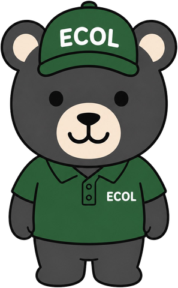

取り置き中・SOLD OUT
表示のサンプルです
カテゴリから探す
点数は販売中・取り置き中（SAMPLE）
状態のみかた
ランクは仮の基準です（クライアント確認中）
傷・汚れは文章でも書きます。家電は「動作確認」をランクとは別に表示します。
買い方と配送
配送について-
a
取り置き期間・お支払い方法は要確認
公式LINE・問い合わせフォームで相談
気になる商品の名前と商品IDを伝えて、状態の確認や取り置きの相談ができます。ご購入は、その後の配送のご相談へと進みます。
-
b
配送地域・料金は未確定
配送でお届け
実店舗はなく、購入品は配送が基本です。北海道内を中心に考えています。
-
c
大型の扱い・リサイクル品の引取は要確認
大型の家具・家電は相談
搬入サイズ・階数・お届け先の地域を、購入の前にお知らせください。冷蔵庫・洗濯機などの古い品の引き取りは、対応可否を確認中です。
- 販売の形
- 実店舗はなく、事務所内の倉庫を使っています。来店での受け取り・お渡しは行っていません
- お渡し方法
- 配送が基本です
- 配送地域・料金
- 未確定北海道内を中心に考えています。地域・商品・建物の条件に合わせて、個別にお見積りする想定です
- 公式LINE
- 友だち追加
- 電話（補助）
- 070-2033-5427電話は営業時間内のみ：AM9:00–PM6:00（日曜休）

CONTACT相談・取り置き
気になる商品は、
まず相談から。
商品の名前を伝えて、状態や配送について聞けます。どちらも釧路買取サービスと共通の窓口です。取り置きの流れ・期間は確認中です（仮）。
LINE・問い合わせフォームは365日24時間受付中返信・対応は営業時間内（9:00〜18:00／日曜休）です。
相談用の文面をコピーする 電話（補助）070-2033-5427LINEだけで購入が完了するとは限りません。内容を確認して、取り置き・配送・お支払いを順にご案内します。受付は24時間ですが、返信は営業時間内（9:00〜18:00／日曜休）です。時間外のメッセージは翌営業日以降のお返事になります。
07
売りたい・片付けたい方は
売りたい・片付けたい方は
買取・不用品回収へ
お持ちの品の出張買取・不用品回収・遺品整理のご相談は、釧路買取サービスのサイトで受け付けています。このサイトは、中古品を買いたい方向けのリユース販売です。
釧路買取サービス買取・不用品回収のご相談